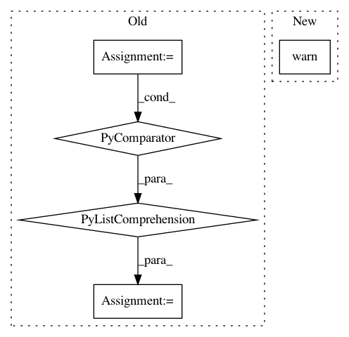

e2502957ebe993c13fd84af53dea1a9e71c0d5ae,bambi/models.py,Model,plot_priors,#Model#,730
Before Change
raise ValueError("Cannot plot priors until model is built!")
if var_names is None:
unobserved_rvs_names = [v.name for v in self.backend.model.unobserved_RVs]
var_names = pm.util.get_default_varnames(
unobserved_rvs_names, include_transformed=False
)
After Change
var_names = [vn for vn in var_names if vn not in flat_rvs]
if flat_rvs:
warnings.warn(
f"Variables {", ".join(flat_rvs)} have flat priors, and hence they are not plotted",
)
axes = None
if var_names:
pps = self.prior_predictive(draws=draws, var_names=var_names, random_seed=random_seed)
In pattern: SUPERPATTERN
Frequency: 3
Non-data size: 5
Instances
Project Name: bambinos/bambi
Commit Name: e2502957ebe993c13fd84af53dea1a9e71c0d5ae
Time: 2020-10-30
Author: aloctavodia@gmail.com
File Name: bambi/models.py
Class Name: Model
Method Name: plot_priors
Project Name: rasbt/mlxtend
Commit Name: 17c84d2804318861e8849182f43e5884e6dd0cfc
Time: 2020-04-03
Author: lichenkatrinani@gmail.com
File Name: mlxtend/classifier/ensemble_vote.py
Class Name: EnsembleVoteClassifier
Method Name: fit
Project Name: nilmtk/nilmtk
Commit Name: 44672d4eba334ca97d32874d9aa03b02ce46d513
Time: 2014-12-10
Author: jack-list@xlk.org.uk
File Name: nilmtk/metergroup.py
Class Name: MeterGroup
Method Name: load